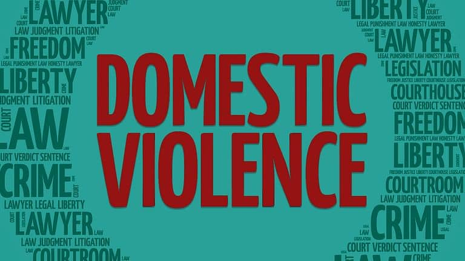

Society’s Approach Towards Crime Against Women
Rape, molestation, kidnapping and murder are the most common forms of crime against women in India.
The women in India are also vulnerable to acid attacks and eve-teasing. The mindset of the people, including the victim and the spectator, is to ignore and just let it go.
But, what we, as the responsible citizens of an independent country, fail to realise is that these instances of harassment can flare up into other bigger heinous crimes against women.
And that is when the importance of learning self-defence techniques for women is felt.
Domestic violence is violence or other abuse that occurs in a domestic setting, such as in a marriage or cohabitation. Domestic violence is often used as a synonym for intimate partner violence, which is committed by one of the people in an intimate relationship against the other person, and can take place in relationships or between former spouses or partners. In its broadest sense, domestic violence also involves violence against children, parents, or the elderly. It can assume multiple forms, including physical, verbal, emotional, economic, religious, reproductive, financial abuse, or sexual abuse. It can range from subtle, coercive forms to marital rape and other violent physical abuse, such as choking, beating, female genital mutilation, and acid throwing that may result in disfigurement or death, and includes the use of technology to harass, control, monitor, stalk or hack.[1][2] Domestic murder includes stoning, bride burning, honor killing, and dowry death, which sometimes involves non-cohabitating family members. In 2015, the United Kingdom's Home Office widened the definition of domestic violence to include coercive control

Verbal abuse involves using words to name call , bully , demean , frighten , intimidate , or control another person.
This can include overt verbal abuse such as yelling , screaming , or swearing.
Such behaviour are attempts to gain power , and the goal is to control and intimidate you into submission.
As a result , it is abusive and should not be tolerated or execused.
However , verbal abuse can also be much more subtle.
Victims of verbal abuse often question whether or not what they are experiencing is truly abusive.
They also wonder whether or not it is a big deal.
Some signs that you are experiencing verbal abuse include.
"Stalking is a pattern of repeated and unwanted attention , harassment , contact , or any other course of conduct directed at a specific person that would cause a reasonable person to feel fear," according to the department of justice.
Similar to crimes of sexual voilence , stalking is about power and control.
Making threats against someone , or that person's family or friends
Non-consensual communication , such as repeated phone calls , emails , text messages , and unwanted gifts
Repeated physical or visual closeness , like waiting for someone to arrive at certain locations , following someone , or watching someone from a distance
Any other behaviour used to contact , harass, track, or threaten someone
Internet has become one of the integral part of our daily life.
It has transformed the way we communicate, make friends, share updates, play games, and shop.
They are impacting most aspects of our day-to-day life.
Cyberspace connects us virtually with crores of online users across the globe.
With increasing use of Cyberspace, cybercrimes especially aginst women and children such as cyber stalking,cyber bullying, cyber harassment, child pornography, rape content, etc. are also increasing rapidly.
To stay safe in the online world, it is important to follow some cyber safe practices which may help in making our online experience and productive:
I have taken permission from sachivalaya for conducting survey in near by areas. I conduct survey in near by areas about women empowerment in the face of crime program and I choose some shops . I collect information from shopkeeper. who are facing and what they know about Crime against women in their daily life . Now a days women is the victim of a crime every minute wheather they are at home,in public or at work women are not safe. Common forms of crime against women in India include acts such as domestic violence, sexual harrasment, stalking, eve-teasing verbal abuse who are facing in they schools and colleges and some work places they puts their physical and psychological health risk.


Crime against women is a social problem that affects millions in the INDIA. Not only do the individuals suffer from the abuse, but her family, children and community suffer from a disturbance. This is a large scale issue that deserves serious attention. Through education, women can start to find their way to a safe place in their lives and men can start leaving behind the outdated social models of what it means to be a mans